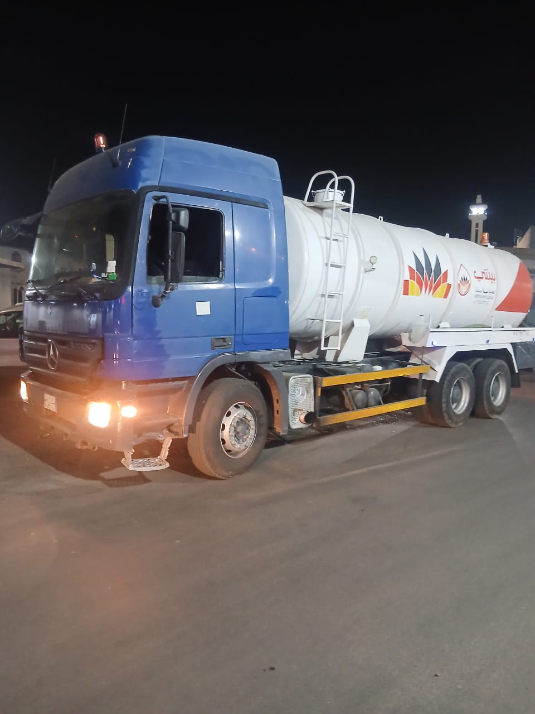
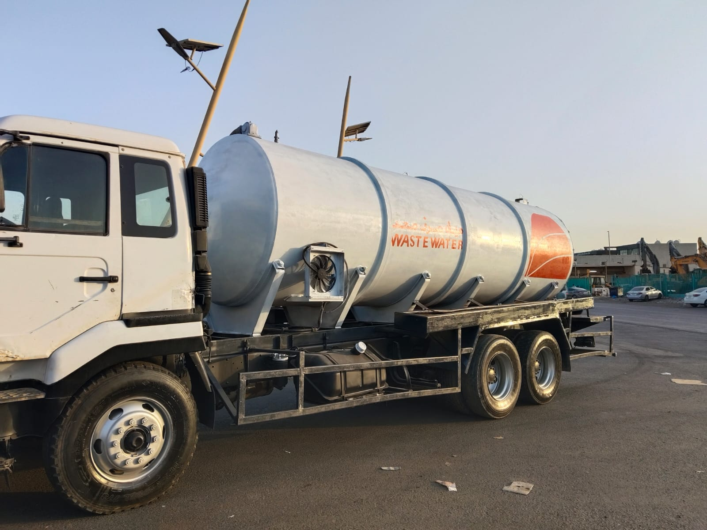
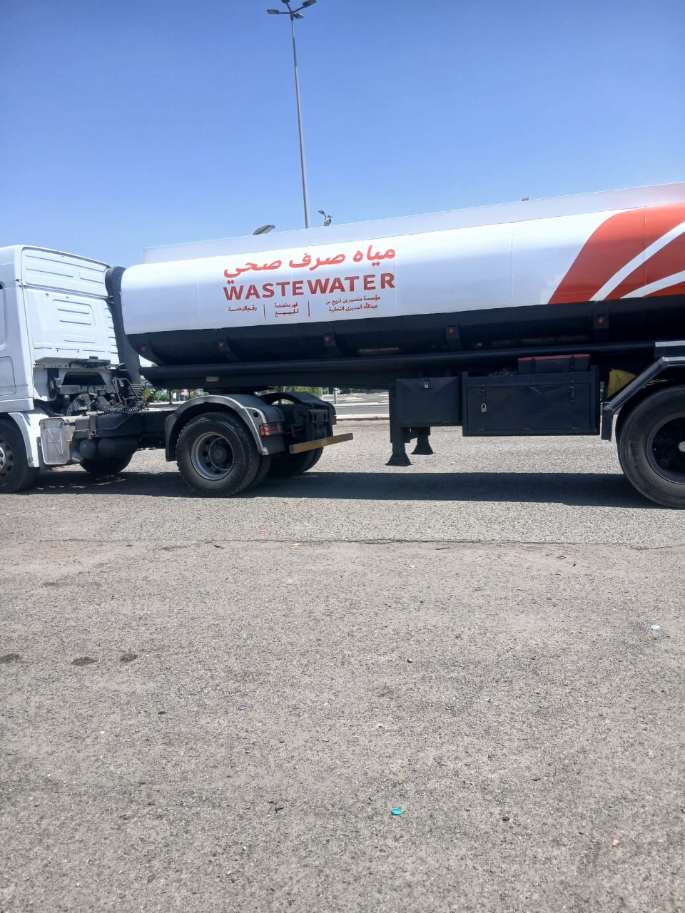
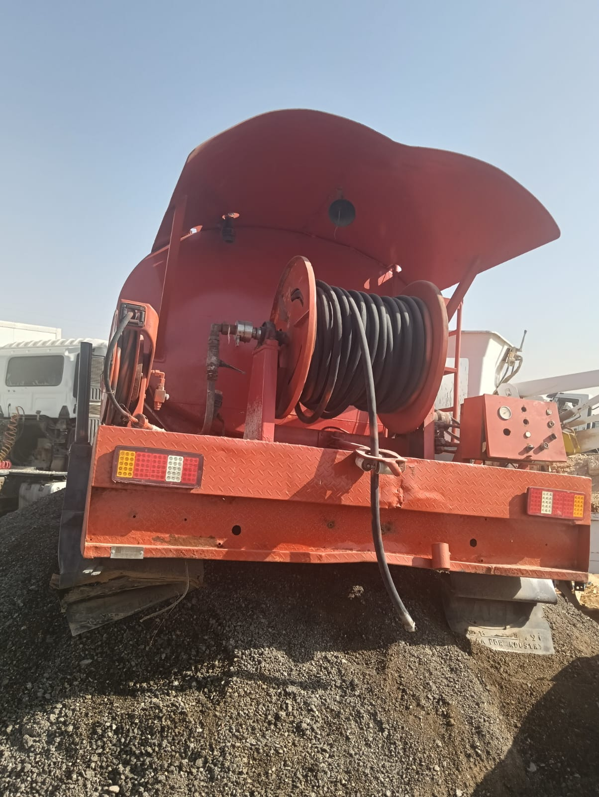

خدمات الصرف الصحي للمنازل والمنشآت في نجران
خدمات الصرف الصحي في نجرانوايت شفط بيارات وتسليك مجاري
تحتاج وايت شفط نجران أو معالجة انسداد؟ نوفر خدمات شفط البيارات وتسليك وتنظيف المجاري وغرف التفتيش داخل نجران، مع التواصل المباشر لتحديد الخدمة المناسبة.
الشربيني لخدمات الصرف الصحي في نجران
نقدّم خدمات الصرف الصحي داخل نجران للمنازل والمباني والمنشآت، وتشمل طلب وايت صرف صحي، شفط البيارات، تسليك المجاري وتنظيف غرف التفتيش. نساعدك في اختيار التدخل المناسب حسب نوع المشكلة وموقعها.
سواء كنت تواجه طفحًا في البيارة أو بطئًا في تصريف المياه أو انسدادًا في مواسير المجاري، يمكنك التواصل معنا لشرح الحالة وتحديد احتياج الموقع قبل تنفيذ الخدمة.
- وايت شفط صرف صحي لخدمة المواقع داخل نجران
- شفط بيارات المنازل والمنشآت
- تسليك المجاري والبالوعات والمواسير
- تنظيف المجاري وغرف التفتيش
- طلبات الأفراد والمنشآت في مدينة نجران
خدمات الصرف الصحي في نجران
اختر الخدمة الأقرب لمشكلتك وانتقل إلى صفحتها لمعرفة التفاصيل ثم اتصل مباشرة.
وايت صرف صحي نجران
وايت شفط صرف صحي نجران وطلب وايت شفط نجران للمنازل والمنشآت. تفاصيل الخدمة وأرقام الاتصال في صفحة مخصصة.
02شفط بيارات نجران
شفط بيارات نجران، وسحب محتويات البيارات باستخدام الوايت المناسب بحسب الموقع وحالة البيارة.
03شركة تسليك مجاري بنجران
معالجة انسداد المجاري والبالوعات ومواسير الصرف، مع تحديد نقطة الانسداد قبل بدء التسليك.
04تنظيف مجاري وغرف التفتيش
تنظيف المجاري وغرف التفتيش في نجران وإزالة الرواسب والعوائق التي تعيق تصريف المياه.
05فك السدد في نجران
فك السدد في الأحواض والمراحيض والبالوعات ومخارج الصرف داخل نجران، مع تحديد موضع الانسداد أولاً.
06تسليك المواسير في نجران
تسليك مواسير الصرف الرئيسية والفرعية في نجران وإزالة العوائق والترسبات لاستعادة تدفق المياه.
07عقود الشركات والمنشآت بنجران
تنظيم احتياجات الصرف الصحي الدورية للمنشآت والشركات في نجران، وفق طبيعة الموقع والخدمات المطلوبة.
كيف تطلب خدمة الصرف الصحي في نجران؟
تواصل معنا
اتصل بنا أو تواصل معنا عبر الواتساب وأخبرنا بالخدمة التي تحتاج إليها.
تحديد المشكلة
نتعرف على تفاصيل المشكلة ونحدد نوع الخدمة والمعدات المناسبة للتنفيذ.
الوصول للموقع
يتحرك فريق العمل والمعدات المطلوبة إلى الموقع لتنفيذ الخدمة.
تنفيذ الخدمة
يتم تنفيذ أعمال الشفط أو التسليك ومعالجة المشكلة بالشكل المطلوب.
خدمة تعتمد عليها
اختيار الخدمة الصحيحة من البداية يقلل الوقت الضائع ويجعل التواصل واضحًا للمنازل والمنشآت في نجران.
استجابة سريعة
سرعة في استقبال الطلبات والتحرك لتنفيذ الخدمات المطلوبة.
معدات مجهزة
استخدام سيارات ومعدات مناسبة لأعمال الشفط والتسليك.
فريق متخصص
فريق لديه خبرة في التعامل مع مشكلات الصرف الصحي المختلفة.
خدمات للشركات
إمكانية تنفيذ عقود دورية للمصانع والمنشآت والشركات.
نطاق التغطية
نطاق طلبات الموقع هو نجران فقط. عند الاتصال، حدّد الحي أو موقع العقار ونوع المشكلة للتحقق من إمكانية تنفيذ الخدمة في موقعك.
معرض صور الصرف الصحي
صور توضيحية لمجال خدمات الصرف الصحي والشفط والتسليك.




الأسئلة الشائعة
اتصل بالرقم الرئيسي 0504 297 267 أو استخدم واتساب، ثم اذكر موقعك داخل نجران ونوع خدمة الشفط المطلوبة.
نعم. شفط البيارة يعني سحب محتوياتها بالوايت، أما التسليك فيعالج انسداد المواسير والبالوعات. وقد تحتاج بعض الحالات إلى الخدمتين بعد المعاينة.
عند بطء التصريف أو رجوع المياه من البالوعة أو انسداد مرحاض أو حوض، اشرح الأعراض لتحديد خطوة الفحص والتسليك.
يمكنك طلب تنظيف غرف التفتيش وإزالة الترسبات أو الرواسب داخلها. يتم تحديد نطاق العمل بعد وصف الحالة وموقع الغرفة.
يتحدد السعر بحسب موقع الخدمة، وسعة البيارة، ونوع المشكلة، والمعدات المطلوبة. اتصل لتوضيح التفاصيل قبل الاتفاق.
تواصل معنا
لطلب وايت صرف صحي أو شفط بيارات أو تسليك وتنظيف مجاري داخل نجران، اتصل أو أرسل وصف المشكلة وموقعك عبر واتساب.
نطاق الخدمة المذكور في الموقع: نجران فقط. يُرجى تحديد موقعك داخل نجران عند التواصل.